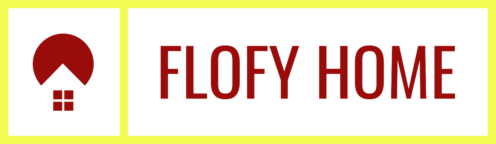

<mat-toolbar style="background: #cfd8dc;">
    <a [routerLink]="'/'" mat-icon-button class="example-icon" aria-label="Example-icon-button with menu icion">
        
    </a>
    <span class="example-spacer"></span>
    <a *ngIf="!login.isLoggedIn()" [routerLink]="'/login'" mat-icon-button class="example-icon favorite-icon"
        aria-label="Example icon-button with heart icon">
        Iniciar Sesión</a>
    <a *ngIf="login.isLoggedIn()" (click)="logout()" style ="margin-right: 50px;" mat-icon-button class="example-icon favorite-icon"
        aria-label="Example icon-button with heart icon">
        Cerrar Sesión</a>
    <a *ngIf="!login.isLoggedIn()" [routerLink]="'/signup'" mat-icon-button class="example-icon favorite-icon mr30 ml70"
        aria-label="Example icon-button with heart icon">
        Registrarse</a>
    <button
    *ngIf = "isLoggedIn && user" mat-button style="margin-right: 10px;"  class="example-icon favorite-icon"
        routerLink ="/admin/profile"
        aria-label="Example icon-button with heart icon">{{ user.username }}</button>
</mat-toolbar>